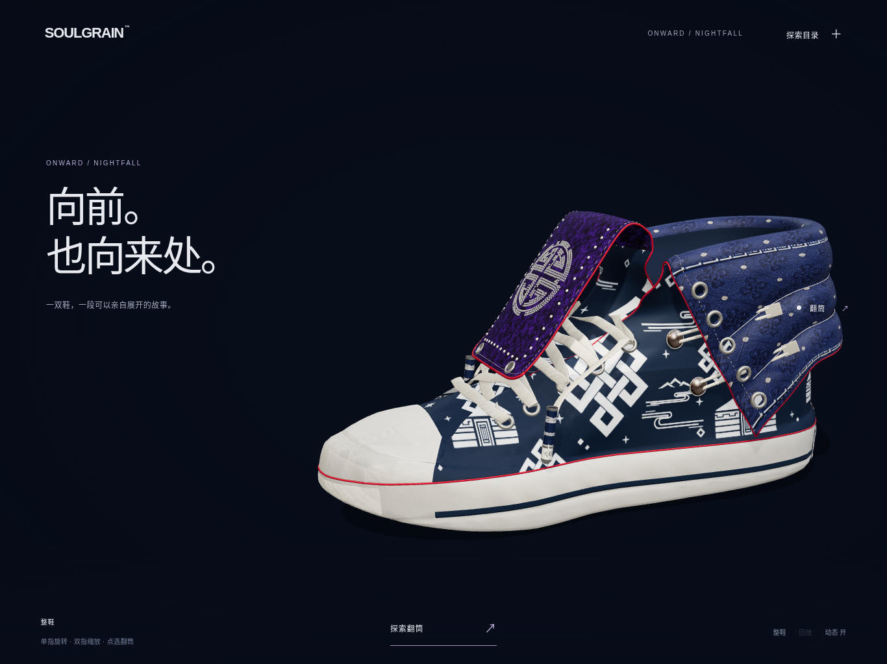
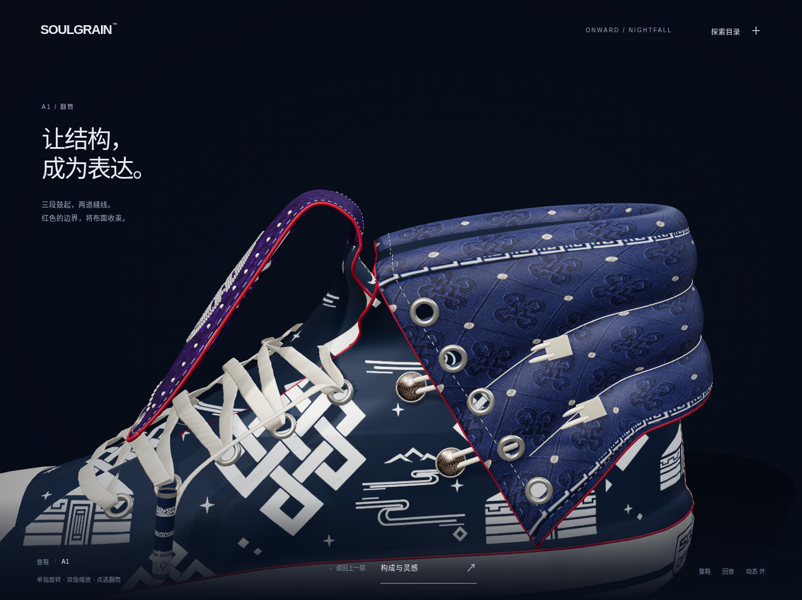
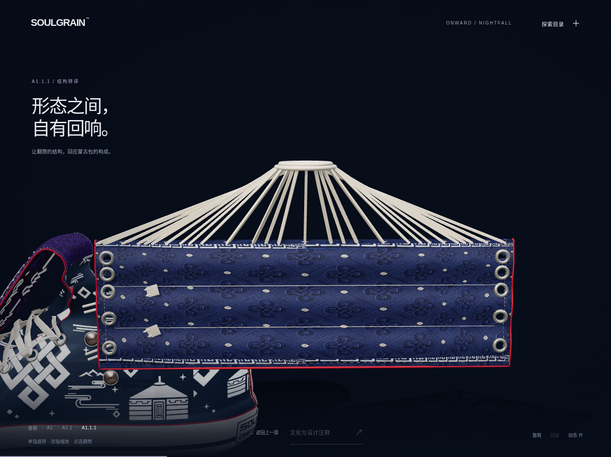
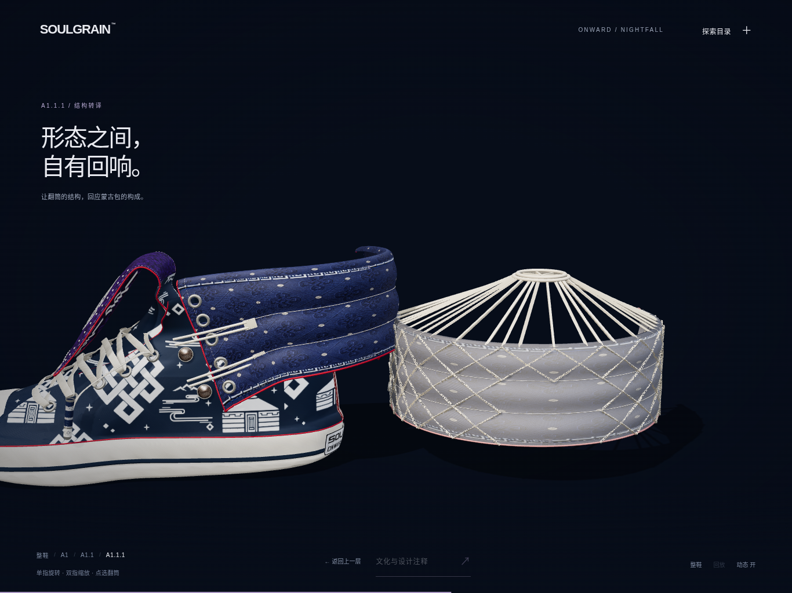
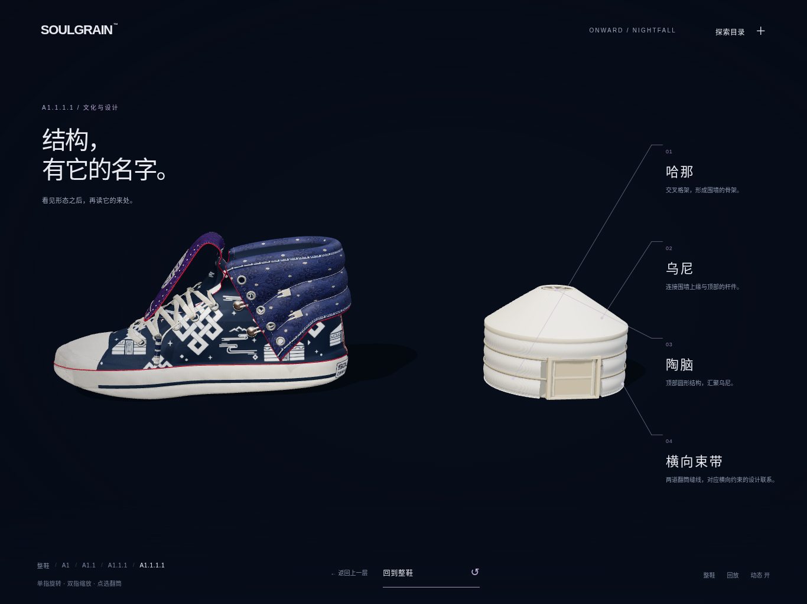

ONWARD / MATERIAL & STRUCTURE REVIEW
让材质与结构，更有分量。
保留已确认的鞋型和整条叙事路径，集中改善布面受光、物体厚度与蒙古包围合后的实感。点击图片可查看完整原图。
当前对比：整鞋主场景


对比图未经锐化、对比度或色彩滤镜处理，均为实际网页截图。本轮最终双主角镜头略拉近；前后用于视觉审查，并非同尺寸像素对比。
修复布面受光
修复影响 9 个材质的全黑法线贴图，恢复正确的表面朝向和织物光影。V8 鞋子网格、UV、印花与既定配色未改。
围合后有实体厚度
蒙古包使用实心毡顶和有厚度的门框、门檐；完整终态不再以半透明屋顶表现，边缘与阴影更清楚。
格架回到结构内部
展开和组合时可以读到内部格架，围合完成后收于毡面之内，让外观呈现完整的建筑体积。
展开、连接与复位的实际画面




当前画面来自软件 WebGL 渲染，不代表 iPad Safari 实机帧率；触控与持续运行表现仍需真机复核。截图展示本轮视觉结果，动画逻辑沿用已确认的 V1。
此前的 V1 完整演示视频仅作为上一轮动画档案，不能代表本轮材质与结构的新视觉。本页没有声称提供新视频。